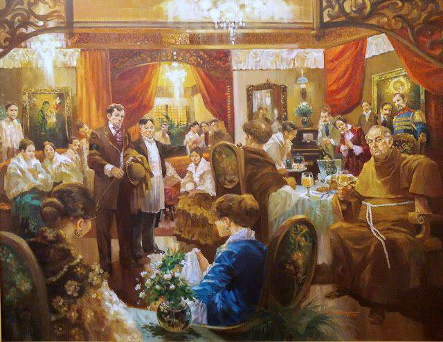

I Love You Since 1892
Ang pag-iibigan natin ay maisusulat sa ikaapat na pagkakataon
By Binibining Mia/UndeniablyGorgeous

Pumasok sa isang mundo kung saan ang pag-ibig ay
lumalampas sa hangganan ng panahon at muling isusulat
ng tadhana. I Love You Since 1892, inilathala ni Binibining
mia katulong ang ABS-CBN Publishing Inc., ay higit pa sa isang
kwento ng pag-ibig—ito ay isang paglalakbay sa mayaman ngunit magulong
panahon ng Pilipinas noong huling bahagi ng ika-19 na siglo. Sa aklat na ito,
matagumpay na pinaghalo ang pag-ibig, kasaysayan, at ang masalimuot na
kalagayan ng isang lipunang nasa bingit ng rebolusyon.
Book 1:
"Ang ating pag-ibigan ay muling magpapatuloy sa araw ng ikaapat na pagkakataon."
Si Carmelita Montecarlos ay ang bunsong anak ng pinakamayamang angkan sa San Alfonso.
Habang si Juanito Alfonso naman ay ang anak ng pinakamaimpluwensiya at makapangyarihang gobernadorcillo.
Itinadhana silang mag-ibigan na pinagtibay ng isang kasunduan. Nakatakda silang ikasal sa ika-dalawampung kaarawan ni Carmelita.
Ngunit sa mismong araw ng kanilang engrandeng kasal ay binaril si Juanito. At hindi na nalaman pa kung sino ang may sala nito.
Inakala ng lahat na doon na nagtapos ang kanilang masaklap na kuwento. Na gaya ng kanilang mga kaluluwa ay sumasalangit na rin ang naudlot na pag-ibigan nilang dalawa.
Ang hindi nila alam, may ibang plano ang tadhana.
The laws of nature will bend.
After more than 104 years, Carmela, the fourth generation of the Montercarlos clan will be born on a leap year sa parehong araw na ipinanganak si Carmelita.
A short trip to San Alfonso for her 20th birthday will give her rebellious life a whimsical twist.
Through a diary, she'll go back in time. And the Carmela of 2016 will meet Juanito of 1892.
"Juanito basta kahit anong mangyari, wag na wag kang maiinlove sa akin"
- Carmela
Book 2:
Sa kanyang pagsusumikap na makabalik sa sariling panahon, natuklasan niyang na ang tanging paraan para makabalik sya sa Panahon nya ay maisakatuparan ang Isang Misyon, kailangan niyang baguhin ang mapait na kapalaran ni Carmelita Montecarlos, isang dalagang kamukhang-kamukha
Habang nananatili sa nakaraan, unti-unting nahuhulog ang loob ni Carmela kay Juanito Alfonso, ang kanilang pag-iibigan ay hinamon ng mga pagsubok ngunit
Sa kabila ng mga balakid, pinilit nina Carmela at Juanito na ipaglaban ang kanilang pagmamahalan.
Dear Diary,
Gustuhin ko mang magtago bago niya ako makita.
Tumalikod man ako bago siya magsalita. Ibahin ko man ang aking mga kilos at gawa.
Alam ko sa sarili ko na hindi na ako makaliligtas pa sa katotohanang...
nahuhulog na ako sa kanya at hindi ko na ito kayang itago pa.
Nagtatapat,
Carmela
"Ako'y sayo at ika'y akin.
Iyan angnakasukat sa mga bituin,
Balutin man ng mga ulap ang langit
Wala pa ring makakapigil sa atin.
Sa paglubog at pagsikat ng araw Pinapangarap
ko ay ikaw.
Pangakong sayo'y binitiwan
Na kailanman'y hindi ka iiwan,
Asahan mong puso ko'y tapat.
Pagmamahal ko sayo'y higit pa sa sapat."
-Juanito Alfonso(1891)

Book 3: "Hustisya"
Naharap si Carmela sa mas matitinding pagsubok
habang hinahanap ang hustisya para sa mga
mahal niya sa buhay, ang mga lihim ng nakaraan
ay unti-unting nabubunyag, na nagdudulot ng masalimuot
na sitwasyon sa pagitan ng mga karakter. Sa kabila ng
mga hamon, patuloy na ipinaglalaban ni Carmela ang kanyang
pagmamahal kay Juanito habang sinisikap niyang itama ang
mga pagkakamali ng nakaraan.
"Mga minamahal kong kaibigan, nais kong ipakilala
sa inyo ang binibining bumihag sa aking puso... si Carmela"
- Juanito Alfonso
Dear Diary,
Posible bang magbago ang tibok ng puso ng isang tao?
Maaari bang malimutan ng puso ang sinumpaan nitong pangako?
Kung ang pag-ibig ko sa'yo at pag-ibig mo sa'kin, Ang pumipigil sa hustisyang nais mong makamit.
Naniniwala na ako na nagbabago ang tibok ng puso, At nakakalimot ito sa sinumpaang pangako.
Nagmamahal, Carmela
Book 4: "Pamamaalam"
patuloy na hinaharap nina Carmela at Juanito ang mga
hamon ng kanilang pagmamahalan sa gitna ng mga pagsubok
ng tadhana, sa kanilang paglalakbay, susubukin ang kanilang
pagmamahalan at pananampalataya sa isa't isa. Ang mga desisyon
nila ay magkakaroon ng malaking epekto hindi lamang sa kanilang
mga sarili kundi pati na rin sa mga tao sa kanilang paligid
"Para sa iyo ito, anak" - Doña Soledad
"Isinakripisyo ni Doña Soledad ang
kanyang buhay para kay juanito dahil
alam na nya kung sino ka at ang misyon
mo sa panahong ito" - Madre Olivia
Dear Diary,
Bakit? Bakit hanggang sa panahong ito? Wala akong karapatang makapiling ang aking ina...
Nasasaktan, Carmela
Mahal kong anak,
Marahil sa mga oras na ito ay hindi mo na ako kapiling at marahil,
alam mo na rin na alam ko na ang lahat tungkol sa totoong pagkatao mo
at sa tyong misyon sa panahong ito. Noong una, hindi ako makapaniwala
nang mabasa ko ang mga nakasulat sa talaarawan na palagi mong dala-dala.
Pasensiya na kung pinakialaman ko ang pribadong talaarawan na ito nang
maglinis ako sa iyong kwarto kahapon. Hindi ko napigilang basahin ito
nang makita ko ang mga kataga pag-ibigan natin ay muling massusulat hina na.
"Ang sa unang pahina sa ikaapat na pagkakataon"
Inakala ko na gumagawa ka lamang ng isang istorya ngunit sa bawat paglipat
ko nang pahina ay may kung anong bigat akong naramdaman. Hindi ko mawari kung
paano ngunit nakita ko ang totoong ikaw. Ang pamilya mo at ang buhay mo sa
modernong panahon. Hindi ko maitatanggi na kamukhang-kamukha mo nga ang anak
kong si Carmelita. Magkaibang-magkaiba man kayo ng ugali at kilos, kailanman
ay hindi ko naramdamang hindi ikaw ang anak kong si Carmelita
Sabi nga nila, ang lukso ng dugo ay nararamdaman lamang ng isang magulang
sa kaniyang totoong anak. Ngunit sa pagkakataong ito ay tumututol ako sa
paniniwalang iyon dahil ni isang segundo, hindi ako nagduda sa iyong pagkatao.
Hindi ko naramdamang hindi kita anak. Sa katunayan nga, lalo pa akong napamahal
sa iyo. Labis kitang dinadakila sapagkat nakakaya mo ang lahat ng hamon ng
tadhana sa iyo. Labis din akong nagpapasalamat dahil nakilala kita, anak, at
nagkaroon ako ng pagkakataong mahalin at alagaan ka. Bagama't hindi ka man nagmula
sa aking sinapupunan, hindi ka naman naiiba kina Maria, Josefina, at Carmelita.
Habambuhay pa rin kitang ituturing na aking anak at bilang isang ina, handa akong
gawin ang lahat para sa iyo. Maging ang buhay ko ay handa kong ialay para sa
ikatatagumpay ng misyon mo.
Hangad ko ang kaligayahan niyo ni Juanito at nawa'y magtagumpay
ka sa iyong misyon at makabalik ka na sa piling ng iyong
totoong pamilya. Mahal na mahal kita, Carmela
Ang iyong ina na lubos na nagmamahal sa iyo,
Soledad Montecarlos
"Ang punong ito ang magiging saksi ng ating
pag-iibigan... na malalagpasan natin ang
lahat ng pagsubok sa buhay at magiging
matatag tayo kahit ano ang mangyari" - Juanito
"Je t'aime, ich liebe dich, te amo" - Juanito
"Tatlong magkakaibang lenggwahe ngunit iisa lang ang Ibig sabihin, MAHAL KITA"
"Mahal din Kita" - Carmela
Dear Diary,
Hinding hindi ko makakalimutan ang araw
na ito, ika- 1 ng Enero ng taong 1892 Dahil sa
araw na ito nasabi ko na rin sa kanya na...
mahal ko siya.
Nagmamahal, Carmela
Book 5: Ang Pagwawakas
Ang ating pag-iibigan ay muling masusulat sa huling pagkakataon." - Carmela Isabella
"Tinupad ko ang pangako ko sa iyo na kahit anong mangyari
lalaban ako at hindi ako mamamatay" - Juanito